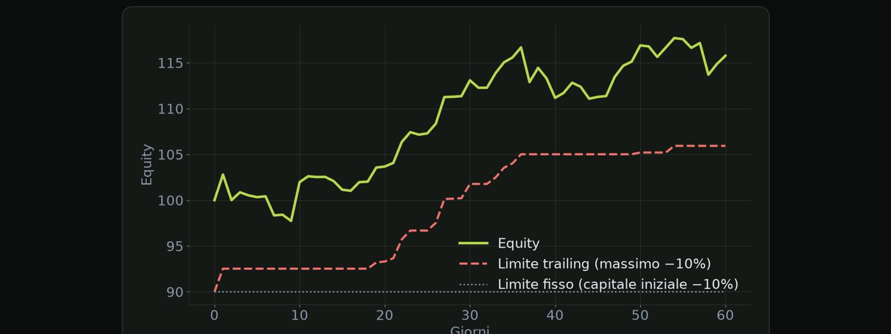

Materiale educativo, non consulenza finanziaria. Il trading con leva su forex, CFD e futures comporta un rischio elevato: puoi perdere tutto il capitale. Numeri, esempi e simulazioni non prevedono risultati futuri.
I limiti che decidono se la prova va avanti o finisce.
Prima una precisazione importante. Le regole cambiano da una prop firm all'altra e nel tempo: quelle di questa lezione sono esempi. Leggi sempre il regolamento attuale, prima di pagare e prima di operare. Questo corso non è una guida a una prop firm specifica e non ti dice quale scegliere.
| Regola | Esempio tipico | Cosa succede se la violi |
|---|---|---|
| Obiettivo di profitto | 8–10% del capitale | la fase non si supera |
| Perdita massima giornaliera | 4–5% | conto chiuso o fase fallita |
| Perdita massima totale | 8–12% | conto chiuso |
| Giorni minimi di trading | 3–5 giorni | fase non validata |
| Tempo massimo | a volte 30 giorni, a volte nessuno | fase non superata |
Valori di esempio. Verifica il regolamento della tua prop.
La perdita massima totale può essere di due tipi. Statica: il limite resta fisso, capitale iniziale meno una percentuale. Trailing: il limite sale con i tuoi massimi, massimo raggiunto meno una percentuale. La differenza cambia molto la gestione del rischio, e la trailing è molto più stringente.
| Capitale | 100.000 € |
| Limite giornaliero | 5% = 5.000 € |
| Rischio per trade | 1% = 1.000 € |
| Perdite piene per avvicinarsi | circa 5 |
Non ti chiedono di essere bravo. Ti chiedono di non sforare.
Quanto rischiare quando il limite non è tuo ma della firma.
Cosa cambia con una prova? Il limite non lo scegli tu, e superarlo significa perdere la prova, non solo del denaro. Il tuo limite personale deve stare dentro il loro, con un margine di sicurezza. E se c'è un tempo massimo, non devi cercare la velocità a ogni costo.
| Limite della firma | Il tuo limite (metà) |
|---|---|
| Giornaliero 5% | 2,5% |
| Totale statico 10% | 5% (poi riduci il rischio) |
Regola prudente di esempio.
| Rischio per trade | Fallisce prima del +10% | Trade mediani per arrivarci |
|---|---|---|
| 0,25% | ~0% | ~138 |
| 0,5% | ~0,3% | ~65 |
| 1% | ~5% | ~28 |
| 2% | ~18% | ~8 |
| 3% | ~26% | ~4 |
Sistema con vantaggio reale (45%, +1,8/−1). Con un vantaggio inferiore il risultato peggiora.
La lezione è chiara. Un rischio alto non è un risparmio di tempo: è una scommessa sulla prova. Un rischio basso è più lento, ma molto più sicuro, a patto che il sistema abbia davvero un vantaggio. Se hai un tempo massimo, scegli un valore intermedio e riduci il rischio dopo i primi profitti.
La fretta è il costo nascosto di ogni prova.
Le regole meno intuitive: dove si perde una prova senza accorgersene.

Questo grafico mostra la differenza tra i due tipi di limite. La linea verde è l'equity. La linea punteggiata è il limite statico: capitale iniziale meno dieci per cento, fisso. La linea rossa tratteggiata è il limite trailing: il massimo raggiunto dall'equity meno dieci per cento. Sale ogni volta che l'equity fa un nuovo massimo, e non scende mai. Il risultato: dopo una buona crescita, lo spazio che hai davvero per sbagliare resta di dieci punti rispetto al massimo, non rispetto al capitale iniziale.
| Capitale iniziale | 100.000 € |
| Limite trailing 10% | parte da 90.000 € |
| L'equity sale a | 108.000 € |
| Il limite sale a | 97.200 € |
| Spazio dal massimo | 10.800 €, sempre il 10% del massimo |
Altre regole da leggere bene. La regola di coerenza: alcune firme limitano il peso di un singolo giorno sul profitto totale. Le notizie: alcune vietano o limitano le operazioni attorno agli annunci. Il fine settimana e la notte: alcune vietano di tenere posizioni aperte. Strumenti e robot: alcune limitano certi strumenti o l'uso di automatismi. Tutto questo cambia da firma a firma: leggi il regolamento.
| Leggere le regole intere | |
| Scrivere i limiti nel tuo piano | |
| Testare in demo |
| Fidarsi di un riassunto | |
| Scoprire le regole dopo la violazione | |
| Aumentare il rischio per recuperare tempo |
Cosa fare prima di iniziare. Leggere le regole intere, scrivere i limiti nel tuo piano e testare in demo. Da evitare: fidarsi di un riassunto, scoprire le regole dopo averle violate, aumentare il rischio per recuperare tempo.
La regola che non hai letto è quella che ti farà perdere la prova.
Quando operi su più conti, il rischio si somma anche se non lo vedi.
Perché si usano più conti? Per diversificare tra firme o fasi, non mettendo tutto su una sola prova. Per usare conti di dimensioni diverse. Oppure per separare strategie diverse, ognuna con il suo piano.
| Se la stessa idea perde | −1% su tutti |
| Perdita in € se 100k ciascuno | 3.000 € |
| Rischio come un solo conto | 3% |
| Perdite in momenti diversi | |
| Rischio concentrato | basso |
| Serve però più lavoro |
Il rischio nascosto: lo stesso trade su più conti. Se apri la stessa idea su tre conti da uno per cento ciascuno, quando perde, perdi su tutti e tre insieme: con tre conti da centomila euro, tremila euro in un solo colpo. Come se avessi un solo conto con rischio del tre per cento. Con idee diverse su conti diversi, le perdite arrivano in momenti diversi, ma serve più lavoro di gestione.
Attenzione alle regole. Molte prop firm limitano o vietano di replicare le stesse operazioni su più conti: è un tema di regolamento, non solo di rischio. Verifica cosa è ammesso prima di farlo, perché rischi di perdere tutti i conti insieme. Questo corso non ti dice di replicare operazioni: ti dice di capire il rischio aggregato, nel caso in cui lo faccia.
| Conti | Rischio per conto | Stesso segnale su tutti |
|---|---|---|
| 1 | 1% | 1% di un conto |
| 3 | 1% | 3 conti × 1% = 3 unità di rischio |
| 5 | 0,5% | 5 conti × 0,5% = 2,5 unità |
Se i conti hanno capitali diversi, si ragiona in euro.
Cinque conti, un solo errore.
Prova a risolverli senza guardare: le soluzioni sono nella pagina successiva.
| Limite giornaliero | 4% |
| Rischio per trade | 0,5% |
| Domanda | perdite piene per toccarlo? |
| Capitale | 50.000 € |
| Limite giornaliero firma | 5% |
| Rischio per trade | 0,5% |
| Domanda | quante perdite piene prima del TUO limite (2,5%)? |
| Capitale iniziale | 50.000 € |
| Limite trailing | 8% |
| Equity massima raggiunta | 54.000 € |
| Conti | 4 da 50.000 € |
| Rischio per conto | 1% |
| Stessa idea su tutti |
| Calcolo | 4% ÷ 0,5% |
| Perdite | 8 |
Quattro diviso zero virgola cinque: otto perdite. Un margine ampio.
| Calcolo | 2,5% ÷ 0,5% |
| Perdite | 5 |
Due virgola cinque diviso zero virgola cinque: cinque perdite piene. A quel punto ti fermi, con ancora metà del margine disponibile.
| Limite attuale | 54.000 × 0,92 |
| Valore | 49.680 € |
Cinquantaquattromila per zero virgola novantadue: quarantanovemilaseicentoottanta. Il limite è salito sopra il capitale iniziale: ora anche chiudere in pareggio rispetto al punto di partenza ti lascia con poco margine.
| Rischio per conto | 500 € |
| Totale | 4 × 500 = 2.000 € |
Cinquecento euro per conto, per quattro: duemila euro in un solo colpo. Se per te è troppo, riduci il rischio per conto.
Spunta ogni punto solo se sapresti spiegarlo a voce a un altro trader.
Materiale educativo, non consulenza finanziaria. Il trading con leva su forex, CFD e futures comporta un rischio elevato: puoi perdere tutto il capitale. Numeri, esempi e simulazioni non prevedono risultati futuri. · riskly.trade